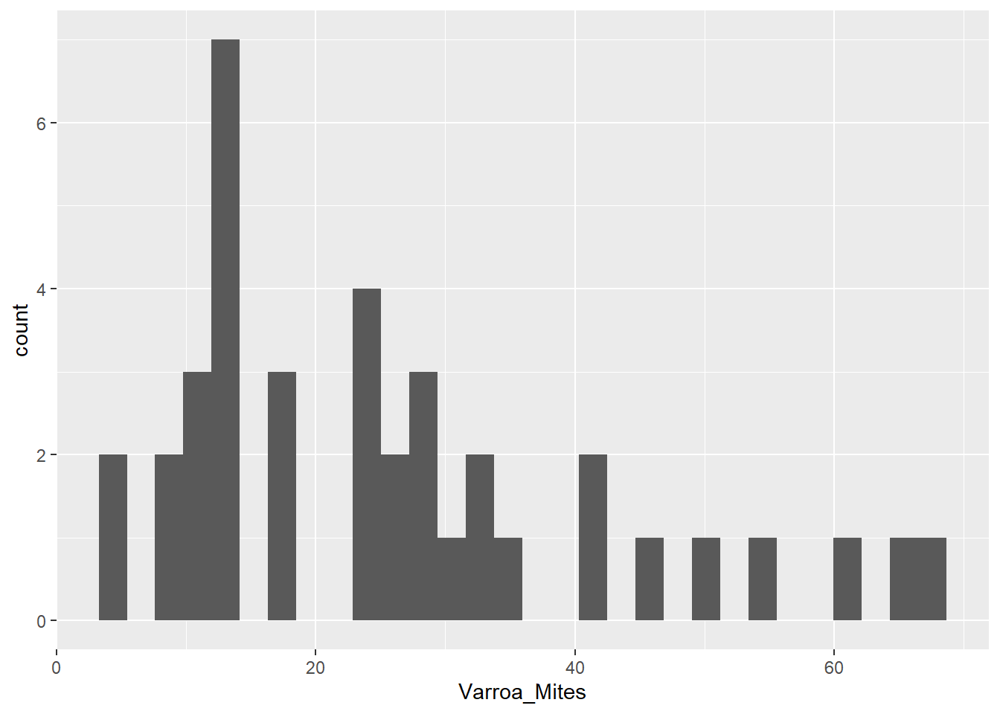
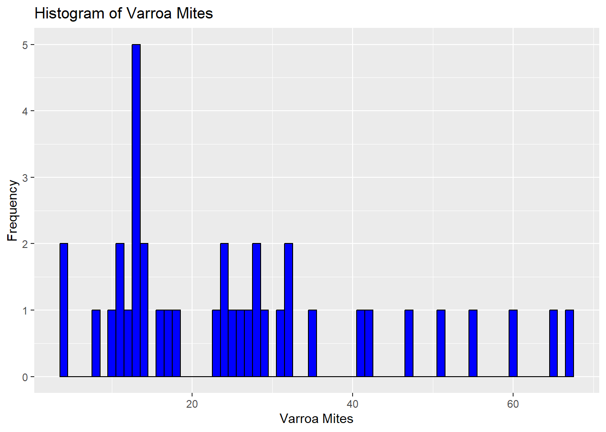
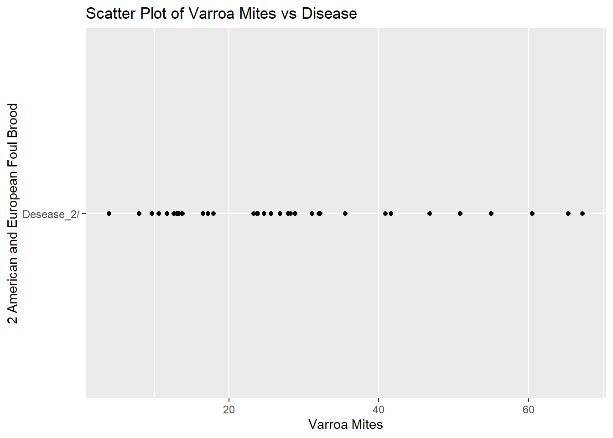
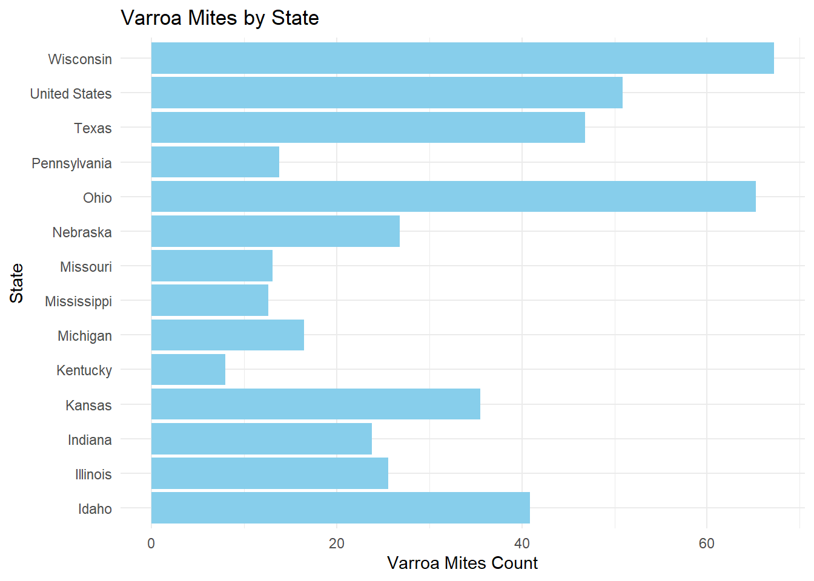
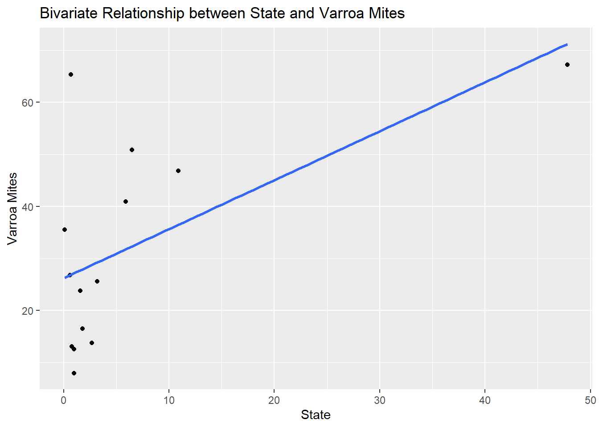
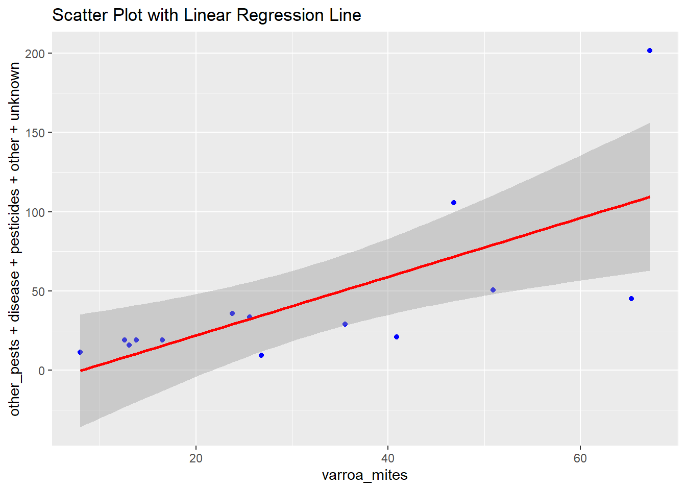

Edward Cruz, Jr, Leonel G. Salazar, Amelia Tristan, Mojisola Popoola
Published
July 30, 2024
The structure below is one possible setup for a data analysis project (including the course project). For a manuscript, adjust as needed. You don’t need to have exactly these sections, but the content covering those sections should be addressed.
This uses MS Word as output format. See here for more information. You can switch to other formats, like html or pdf. See the Quarto documentation for other formats.
Warning: package 'ggplot2' was built under R version 4.3.3
Warning: package 'dplyr' was built under R version 4.3.3
Warning: package 'scales' was built under R version 4.3.3
Warning: package 'showtext' was built under R version 4.3.3
Warning: package 'sysfonts' was built under R version 4.3.3
Warning: package 'ggimage' was built under R version 4.3.3
Summary/Abstract
Group Ten is pursuing the historical data collected by various public agencies to determine if the impact of Varroa, American Foulbrood, and global warming has demonstrated an increase in hive losses across the United States and Texas. The research will be accomplished using data sets derived from the agencies National Agricultural Statistics Service, Agricultural Statistics Board, and United States Department of Agriculture (USDA). Data sets containing several years of hive losses based on varroa and bacterium losses including recent possible environmental thermal global warming. A visualization of outcomes using R demonstrating and validating possible detrimental effects on honeybee colonies in the United States and Texas wrought by the negative impact of mites, bacterium, and global warming that will affect honey production and inevitably impact food production.
Introduction
# Create a data frame with the composition of honeyhoney_data <-data.frame(component =c("Fructose", "Glucose", "Water", "Maltose", "Trisaccharides, Carbohydrates", "Sucrose", "Minerals, Vitamins, Enzymes"),percentage =c(38.5, 31.0, 17.1, 7.2, 4.2, 1.5, 0.5))# Define colors for the segmentshoney_data$color <-c("#FFA726", "#FB8C00", "#FFD54F", "#FFB74D", "#90CAF9", "#F06292", "#BA68C8")# Plot with ggplot2ggplot(honey_data, aes(x ="", y = percentage, fill = component)) +geom_bar(width =0.8, stat ="identity", color ="white") +coord_polar("y", start =0) +scale_fill_manual(values = honey_data$color) +geom_text(aes(x=1.8,label =paste0(percentage, "%")), position =position_stack(vjust =0.6), size =3, color ="black") +labs(title ="COMPOSITION OF HONEY",subtitle ="Illustration of honey components by percentage",fill =NULL ) +theme_void() +theme(plot.title =element_text(size =22, face ="bold", hjust =0.5, family ="lobster"),plot.subtitle =element_text(size =14, hjust =0.5),legend.position ="bottom",legend.text =element_text(size =12) )
Warning in grid.Call(C_stringMetric, as.graphicsAnnot(x$label)): font family
not found in Windows font database
Warning in grid.Call(C_textBounds, as.graphicsAnnot(x$label), x$x, x$y, : font
family not found in Windows font database
Warning in grid.Call.graphics(C_text, as.graphicsAnnot(x$label), x$x, x$y, :
font family not found in Windows font database
Honeybees have been nature’s pollinators for centuries, with documented relationships with humans dating back to ancient Egyptians and Hindus. Historically, humans have maintained beehives, using honey as medicine in cultures such as the Egyptians, Assyrians, Chinese, Greeks, and Romans. The natural antibacterial properties of honey made it a valuable treatment for wounds, preventing infection, a practice used by Romans and Russians during World War I. Honeybees and other pollinators are critical for food production and nutritional security, yet bees face a variety of survival challenges. Currently, Varroa mites impact bee colonies and this mite infestation, a tiny red-brown parasite that can live on adult honeybees and reproduce on larvae and pupae in the developing brood. Another major threat is American Foulbrood Disease (AFB), caused by the bacterium Paenibacillus larvae. A disease that is fatal to honeybee larvae and found worldwide. The only effective control measure is to incinerate and destroy infected hives and live bees mitigating the infectious spread to other colonies. In addition, the exploration of climate change impacting honeybee colony losses has only recently been researched. While there are correlations between higher winter temperatures and greater colony losses, the effects of warmer autumn and winter temperatures on colony population dynamics and age structure as potential causes of reduced colony survival have not yet been fully investigated.Index Catalog // USDA Economics, Statistics and Market Information System. (n.d.-b). Index Catalog // USDA Economics, Statistics and Market Information System. (n.d.-a). , USDA - National Agricultural Statistics Service - Surveys - honey bee surveys and reports. (n.d.). https://usda.library.cornell.edu/catalog?f%5Bkeywords_sim%5D%5B%5D=honey+bees&locale=enhttps://www.nass.usda.gov/Surveys/Guide_to_NASS_Surveys/Bee_and_Honey/
You can add options to executable code like this
library(ggplot2)library(sf)
Warning: package 'sf' was built under R version 4.3.3
Linking to GEOS 3.11.2, GDAL 3.8.2, PROJ 9.3.1; sf_use_s2() is TRUE
library(maps)
Warning: package 'maps' was built under R version 4.3.3
states <-st_as_sf(map("state", plot =FALSE, fill =TRUE))
states <-merge(states, varroa_data, by.x ="ID", by.y ="state", all.x =TRUE)
ggplot(data = states) +geom_sf(aes(fill = year), color ="#292929", size =0.2) +scale_fill_manual(values =c("1986 - 1987"="#CD2626", "1988 - 1989"="#CD9B1D", "1990 - 1991"="#FFD700", "1992 - 1993"="#00CD00", "1994 - 1995"="#104E8B" ),na.value ="#757575" ) +theme_minimal() +labs(title ="Spread of Varroa Mites",fill ="Year of First Appearance" )
Written By:sdns6mchl4. (2016, February 24). Varroa mite spread in the United States. Beesource Beekeeping Forums. https://www.beesource.com/threads/varroa-mite-spread-in-the-united-states.365462/ ## General Background Information
Uncapped Honey Floresville,Texas Hive
Capped Honey one Month Later same hive frame- Italian bees Floresville, Texas
Description of data and data source
Bee colonies maintained by beekeepers are considered livestock by the USDA due to their ability to produce honey, a consumable food item, and their essential role in assisting farmers with pollination crop seasons. Given the importance of bee colonies in agriculture, it was logical to source data from the following two authoritative websites: 1. USDA National Agricultural Statistics Service (NASS): This site provides comprehensive agricultural data, including statistics on honey production and colony health. 2. Bee Informed Partnership: This site offers detailed insights and research on bee colony management and health, contributing valuable information on the status and trends of bee populations. Index Catalog // USDA Economics, Statistics and Market Information System. (n.d.-a). https://usda.library.cornell.edu/catalog?f%5Bkeywords_sim%5D%5B%5D=honey+bees&locale=en
USDA - National Agricultural Statistics Service - Surveys - honey bee surveys and reports. (n.d.). https://www.nass.usda.gov/Surveys/Guide_to_NASS_Surveys/Bee_and_Honey/
Questions/Hypotheses to be addressed
Hypothesis: “The negative impacts of mites, bacterium, and global warming have detrimental effects on honeybee colonies in the United States and Texas, which in turn will lead to a decline in honey production and negatively impact food production.” This hypothesis can be tested and validated through a visualization of outcomes using R, demonstrating the relationship between these factors and their effects on honeybee colonies.
Bacterium Infection Foul Brood.
Dead bees resulting from extreme heat found in hive.
To cite other work (important everywhere, but likely happens first in introduction), make sure your references are in the bibtex file specified in the YAML header above and have the right bibtex key. Then you can include like this:
Examples of reproducible research projects can for instance be found in [@mckay2020; @mckay2020a].
Methods
Describe your methods. That should describe the data, the cleaning processes, and the analysis approaches. You might want to provide a shorter description here and all the details in the supplement.
Schematic of workflow
Sometimes you might want to show a schematic diagram/figure that was not created with code (if you can do it with code, do it). ?@fig-schematic is an example of some - completely random/unrelated - schematic that was generated with Biorender. We store those figures in the assets folder.
Data aquisition
We got our data from the United States Department of Agriculture (USDA).
Data import and cleaning
We decided to clean out our data from a few different datasets. We had to remove blank spaces and columns that were not pertinent to our analysis. We then filtered out other observations that did not directly deal with the data we are exploring. We are looking for cause of death to bee colonies and how they are affected by mites and climate change so we wanted to single out data that represented the losses so we can explore the different states by year and determine how the colonies were affected.
library(readxl)library(tidyverse)
Warning: package 'tidyverse' was built under R version 4.3.3
Warning: package 'tidyr' was built under R version 4.3.3
Warning: package 'readr' was built under R version 4.3.3
Warning: package 'stringr' was built under R version 4.3.3
── Attaching core tidyverse packages ──────────────────────── tidyverse 2.0.0 ──
✔ forcats 1.0.0 ✔ stringr 1.5.1
✔ lubridate 1.9.3 ✔ tibble 3.2.1
✔ purrr 1.0.2 ✔ tidyr 1.3.1
✔ readr 2.1.5
── Conflicts ────────────────────────────────────────── tidyverse_conflicts() ──
✖ readr::col_factor() masks scales::col_factor()
✖ purrr::discard() masks scales::discard()
✖ dplyr::filter() masks stats::filter()
✖ dplyr::lag() masks stats::lag()
✖ purrr::map() masks maps::map()
ℹ Use the conflicted package (<http://conflicted.r-lib.org/>) to force all conflicts to become errors
library(ggplot2)library(knitr)
data <-read.csv("C:/Users/ecruz/OneDrive/Documents/UTSA - Data Science Program/Semester Classes/Practicum II Repository/P2-Practicum-II-Portfolio-EdwardCruz/DatabyState.csv")
View(data)
# Select all columns except 3, 6, and 9Data_Clean <- dplyr::select(data, -c(3, 6, 9))
# Output cleaned data file to a csv file.write.csv(Data_Clean, "C:/Users/ecruz/OneDrive/Documents/UTSA - Data Science Program/Semester Classes/Practicum II Repository/P2-Practicum-II-Portfolio-EdwardCruz/Databystate_Clean.csv")
view(Data_Clean)
data <-read.csv("C:/Users/ecruz/OneDrive/Documents/UTSA - Data Science Program/Semester Classes/Practicum II Repository/P2-Practicum-II-Portfolio-EdwardCruz/DatabyState.csv")
# Select all columns except 3, 6, and 9Data_Clean <- dplyr::select(data, -c(3, 6, 9))
# Output cleaned data file to a csv file.write.csv(Data_Clean, "C:/Users/ecruz/OneDrive/Documents/UTSA - Data Science Program/Semester Classes/Practicum II Repository/P2-Practicum-II-Portfolio-EdwardCruz/Databystate_Clean.csv")
# Assuming your data frame is named "data"# Filter for rows where "Loss" or "Deadout" is present in any column (case-insensitive)library(stringr) # Load stringr package for regular expressionsdata_filtered <- Data_Clean[rowSums(sapply(data, grepl, pattern =c("Loss"), ignore.case =TRUE)) >0, ]
# Output cleaned data file to a csv file.write.csv(Data_Clean, "C:/Users/ecruz/OneDrive/Documents/UTSA - Data Science Program/Semester Classes/Practicum II Repository/P2-Practicum-II-Portfolio-EdwardCruz/Databystate_Filtered.csv")
STATE ANSI IS THE CODE FOR STATE BY PERIOD AND YEAR. VALUE IS COUNT.
The above data set is organized by year, state, period of the year, type of loss, and count. There are only three observed years, with observations from 2015 to 2017. Loss by collapse disorder describes a colony that losses a majority of its worker bees. Loss by deadout describes a loss of the entire colony: workers, drones, larvae, pupa, and queen. The bar chart shown below depicts loss count by type and period. The periods roughly follow North American seasons; April through June is spring, January through March is winter, July through September is summer, and October through December is fall. We can observe a pattern in the losses increasing in the first half of the year (January through June), while losses decrease the second half. This could suggest that as the weather warms, colonies are affected by the increasing heat.
`stat_bin()` using `bins = 30`. Pick better value with `binwidth`.
The above data set is organized by year, state, period of the year, type of loss, and count. There are only three observed years, with observations from 2015 to 2017. Loss by collapse disorder describes a colony that losses a majority of its worker bees. Loss by deadout describes a loss of the entire colony: workers, drones, larvae, pupa, and queen. The bar chart shown below depicts loss count by type and period. The periods roughly follow North American seasons; April through June is spring, January through March is winter, July through September is summer, and October through December is fall. We can observe a pattern in the losses increasing in the first half of the year (January through June), while losses decrease the second half. This could suggest that as the weather warms, colonies are affected by the increasing heat
ggplot(data_filtered, aes(x = Year)) +geom_histogram(bins =10, fill ="blue", color ="black", alpha =0.7) +# Adding fill color, border color, and transparencylabs(title ="Histogram of Year", x ="Year", y ="Count") +# Adding labelstheme_minimal()
Warning: package 'mgcv' was built under R version 4.3.3
Loading required package: nlme
Warning: package 'nlme' was built under R version 4.3.3
Attaching package: 'nlme'
The following object is masked from 'package:dplyr':
collapse
This is mgcv 1.9-1. For overview type 'help("mgcv-package")'.
# Output cleaned data file to a csv file.hcny_data <-read.csv("C:/Users/ecruz/OneDrive/Documents/UTSA - Data Science Program/Semester Classes/Practicum II Repository/P2-Practicum-II-Portfolio-EdwardCruz/hcny_CleanDraft.csv", header =FALSE, stringsAsFactors =FALSE)
V1 V2 V3 V4
Length:54 Length:54 Length:54 Length:54
Class :character Class :character Class :character Class :character
Mode :character Mode :character Mode :character Mode :character
V5 V6 V7
Length:54 Length:54 Length:54
Class :character Class :character Class :character
Mode :character Mode :character Mode :character
view(hcny_data)
# Merge the first two rows to create a proper headerheader <- hcny_data[1:4, ]header <-sapply(header, function(x) paste(na.omit(x), collapse =" "))colnames(hcny_data) <- headerhead(header)
# Assuming hcny_data_cleaned is your cleaned data framecolnames(hcnydata_cleaned) <-c("State", "Varroa_Mites", "Other_Parasites_1/", "Disease_2/", "Pesticides", "Other_3/", "Unknown")
# View the updated data framehcnydata_cleaned<-hcnydata_cleaned[-1,]
head(hcnydata_cleaned)
State Varroa_Mites Other_Parasites_1/ Disease_2/ Pesticides Other_3/
4 Idaho 40.9 6.7 5.9 5.7 1.3
5 NA NA NA NA NA
6 Illinois 25.6 13.3 3.2 6.8 6.7
7 Indiana 23.8 5.6 1.6 7.4 18.3
8 Iowa 17.9 2.6 4.5 9.9 5.1
9 Kansas 35.5 2.0 0.1 21.7 3.4
Unknown
4 1.4
5 NA
6 3.7
7 3.0
8 NA
9 2.0
# Verify the changesstr(hcnydata_cleaned)
'data.frame': 51 obs. of 7 variables:
$ State : chr "Idaho" "" "Illinois" "Indiana" ...
$ Varroa_Mites : num 40.9 NA 25.6 23.8 17.9 35.5 8 32 10.6 11.7 ...
$ Other_Parasites_1/: num 6.7 NA 13.3 5.6 2.6 2 2.9 3.6 NA 0.6 ...
$ Disease_2/ : num 5.9 NA 3.2 1.6 4.5 0.1 1 NA 3.9 NA ...
$ Pesticides : num 5.7 NA 6.8 7.4 9.9 21.7 1.3 17.5 4.7 NA ...
$ Other_3/ : num 1.3 NA 6.7 18.3 5.1 3.4 0.5 24.7 NA 0.5 ...
$ Unknown : num 1.4 NA 3.7 3 NA 2 5.6 0.8 NA 4.5 ...
head(hcnydata_cleaned)
State Varroa_Mites Other_Parasites_1/ Disease_2/ Pesticides Other_3/
4 Idaho 40.9 6.7 5.9 5.7 1.3
5 NA NA NA NA NA
6 Illinois 25.6 13.3 3.2 6.8 6.7
7 Indiana 23.8 5.6 1.6 7.4 18.3
8 Iowa 17.9 2.6 4.5 9.9 5.1
9 Kansas 35.5 2.0 0.1 21.7 3.4
Unknown
4 1.4
5 NA
6 3.7
7 3.0
8 NA
9 2.0
`stat_bin()` using `bins = 30`. Pick better value with `binwidth`.
Warning: Removed 13 rows containing non-finite outside the scale range
(`stat_bin()`).

The above indicated the count of Varroa Mites in our data From our project, we found that varroa mites are the top cause for colony loss. Four states had the highest levels of varroa cases and were chosen for comparison, in the United States: Wisconsin, Texas, Ohio, and Pennsylvania. The box plot below shows one outlier in this top 5 areas, with the average being just above 50.
ggplot(hcnydata_cleaned, aes(x = Varroa_Mites)) +geom_histogram(binwidth =1, fill ="blue", color ="black") +labs(title ="Histogram of Varroa Mites",x ="Varroa Mites",y ="Frequency")
Warning: Removed 13 rows containing non-finite outside the scale range
(`stat_bin()`).

# Example scatter plot of two variablesggplot(hcnydata_cleaned, aes(x = Varroa_Mites, y ="Desease_2/")) +geom_point() +labs(title ="Scatter Plot of Varroa Mites vs Disease",x ="Varroa Mites",y ="2 American and European Foul Brood")
Warning: Removed 13 rows containing missing values or values outside the scale range
(`geom_point()`).

The above plot illustrates the comparison between American and European Foul Brood and Varroa Mites
view(hcnydata_cleaned)
# Write the cleaned data to a new CSV filewrite.csv(hcnydata_cleaned, "C:/Users/ecruz/OneDrive/Documents/UTSA - Data Science Program/Semester Classes/Practicum II Repository/P2-Practicum-II-Portfolio-EdwardCruz/hcnydata_cleaned.csv", row.names =FALSE)
# Output cleaned data file to a csv file.hcny_data <-read.csv("C:/Users/ecruz/OneDrive/Documents/UTSA - Data Science Program/Semester Classes/Practicum II Repository/P2-Practicum-II-Portfolio-EdwardCruz/hcny_CleanDraft.csv", header =FALSE, stringsAsFactors =FALSE)
V1 V2 V3 V4
Length:54 Length:54 Length:54 Length:54
Class :character Class :character Class :character Class :character
Mode :character Mode :character Mode :character Mode :character
V5 V6 V7
Length:54 Length:54 Length:54
Class :character Class :character Class :character
Mode :character Mode :character Mode :character
# Step 2: Merge the first two rows to create a new headernew_header <-paste(hcny_data[1, ], hcny_data[2, ], sep =" ")# Step 3: Set the new headercolnames(hcny_data) <- new_header# Step 4: Remove the first three rowshcny_data <- hcny_data[-c(1:3), ]# Step 5: Remove completely blank rowshcny_data <- hcny_data[rowSums(hcny_data !="") >0, ]# Display the resulting data framehead(hcny_data)
# Assuming hcny_data is your cleaned data framecolnames(hcny_data) <-c("state", "varroa_mites", "other_pests", "disease", "pesticides", "other", "unknown")
# Convert specified columns to numeric with warning suppressionhcnydata_cleaned <- hcny_data %>%mutate(across(c("varroa_mites", "other_pests", "disease", "pesticides", "other", "unknown"), ~suppressWarnings(as.numeric(.))))# Display the resulting data framehead(hcnydata_cleaned)
state varroa_mites other_pests disease pesticides other unknown
4 Idaho 40.9 6.7 5.9 5.7 1.3 1.4
NA <NA> NA NA NA NA NA NA
6 Illinois 25.6 13.3 3.2 6.8 6.7 3.7
7 Indiana 23.8 5.6 1.6 7.4 18.3 3.0
NA.1 <NA> NA NA NA NA NA NA
9 Kansas 35.5 2.0 0.1 21.7 3.4 2.0
head(hcnydata_cleaned)
state varroa_mites other_pests disease pesticides other unknown
4 Idaho 40.9 6.7 5.9 5.7 1.3 1.4
NA <NA> NA NA NA NA NA NA
6 Illinois 25.6 13.3 3.2 6.8 6.7 3.7
7 Indiana 23.8 5.6 1.6 7.4 18.3 3.0
NA.1 <NA> NA NA NA NA NA NA
9 Kansas 35.5 2.0 0.1 21.7 3.4 2.0
# Verify the changesstr(hcnydata_cleaned)
'data.frame': 51 obs. of 7 variables:
$ state : chr "Idaho" NA "Illinois" "Indiana" ...
$ varroa_mites: num 40.9 NA 25.6 23.8 NA 35.5 8 NA NA NA ...
$ other_pests : num 6.7 NA 13.3 5.6 NA 2 2.9 NA NA NA ...
$ disease : num 5.9 NA 3.2 1.6 NA 0.1 1 NA NA NA ...
$ pesticides : num 5.7 NA 6.8 7.4 NA 21.7 1.3 NA NA NA ...
$ other : num 1.3 NA 6.7 18.3 NA 3.4 0.5 NA NA NA ...
$ unknown : num 1.4 NA 3.7 3 NA 2 5.6 NA NA NA ...
head(hcnydata_cleaned)
state varroa_mites other_pests disease pesticides other unknown
4 Idaho 40.9 6.7 5.9 5.7 1.3 1.4
NA <NA> NA NA NA NA NA NA
6 Illinois 25.6 13.3 3.2 6.8 6.7 3.7
7 Indiana 23.8 5.6 1.6 7.4 18.3 3.0
NA.1 <NA> NA NA NA NA NA NA
9 Kansas 35.5 2.0 0.1 21.7 3.4 2.0
# Write the cleaned data to a new CSV filewrite.csv(hcnydata_cleaned, "C:/Users/ecruz/OneDrive/Documents/UTSA - Data Science Program/Semester Classes/Practicum II Repository/P2-Practicum-II-Portfolio-EdwardCruz/hcny_CleanDraft.csv", row.names =FALSE)
# Assuming hcnydata_cleaned is your data framehcnydata_cleaned <- hcnydata_cleaned[apply(hcnydata_cleaned, 1, function(x) !all(is.na(x))), ]# Print the modified data frame to verify the changeshead(hcnydata_cleaned)
# Convert the 'state' column to a factorhcnydata_cleaned$state <-as.factor(hcnydata_cleaned$state)# Display the resulting data framehead(hcnydata_cleaned)
# Step 3: Reindex the rows starting from 1rownames(hcnydata_cleaned) <-NULL
# Identify the rows to excluderows_to_exclude <-c(46)# Remove rows 45 to 52 while excluding row 46data_hcny <- hcnydata_cleaned[-c(45:52)[-which(c(45:52) %in% rows_to_exclude)], ]
library(ggplot2)# Create a bar graph to show state and varroa_mitesggplot(data = data_hcny, aes(x = state, y = varroa_mites)) +geom_bar(stat ="identity", fill ="skyblue") +labs(title ="Varroa Mites by State",x ="State",y ="Varroa Mites Count") +theme_minimal() +coord_flip()

T Varroa Mite
The above image shows the count of Varroa Mites by States.Colorado and North Dakota comes highest in the plot with Oklahoma and New Mexico the lowest in count. This indicated that we have more of Varroa Mites in North Dakota and Colorado compared to Oklahoma and New Mexico ## Statistical analysis
Explain anything related to your statistical analyses.
Results
Texas Bee gathering pollen from natural Texas foliage
Exploratory/Descriptive analysis
Use a combination of text/tables/figures to explore and describe your data. Show the most important descriptive results here. Additional ones should go in the supplement. Even more can be in the R and Quarto files that are part of your project.
Remove all rows with any NA values
library(tidyr)library(dplyr)my_data <- data_hcny %>%drop_na()# Verify that NAs have been removedglimpse(my_data)
## Example of a bivariate plot between 'state' and 'varroa_mites'ggplot(my_data, aes(x = disease, y = varroa_mites)) +geom_point() +geom_smooth(method ="lm", se =FALSE) +labs(title ="Bivariate Relationship between State and Varroa Mites",x ="State",y ="Varroa Mites")

From the above graph we see that Varroa Mites concentrated more in certain states than others # Multivariable GLM
Warning: package 'MASS' was built under R version 4.3.3
Attaching package: 'MASS'
The following object is masked from 'package:dplyr':
select
# Specify the GLM modelglm_spec <-linear_reg() %>%set_engine("glm")# Create a recipe for preprocessing the dataglm_recipe <-recipe(varroa_mites ~ other_pests + disease + pesticides + other + unknown, data = my_data) %>%step_normalize(all_predictors())# Create a workflowglm_workflow <-workflow() %>%add_model(glm_spec) %>%add_recipe(glm_recipe)# Fit the modelglm_fit <-fit(glm_workflow, data = my_data)# Print the model summary using tidy()model_summary <-tidy(glm_fit)print(model_summary)
Note the loading of the data providing a relative path using the ../../ notation. (Two dots means a folder up). You never want to specify an absolute path like C:\ahandel\myproject\results\ because if you share this with someone, it won’t work for them since they don’t have that path. You can also use the here R package to create paths. See examples of that below. I generally recommend the here package.
Basic statistical analysis
To get some further insight into your data, if reasonable you could compute simple statistics (e.g. simple models with 1 predictor) to look for associations between your outcome(s) and each individual predictor variable. Though note that unless you pre-specified the outcome and main exposure, any “p<0.05 means statistical significance” interpretation is not valid.
?@fig-result shows a scatterplot figure produced by one of the R scripts.
plot <-ggplot(my_data, aes(x = varroa_mites , y = other_pests + disease + pesticides + other + unknown )) +geom_point(color ="blue") +# Scatter plotgeom_smooth(method ="lm", color ="red") +# Regression lineggtitle("Scatter Plot with Linear Regression Line") +xlab("varroa_mites") +ylab("other_pests + disease + pesticides + other + unknown")print(plot)
`geom_smooth()` using formula = 'y ~ x'

The above diagram indicates that varroa mites are proportionally related to other psests, diseases, pesticides and other unknown parasite
Full analysis
Use one or several suitable statistical/machine learning methods to analyze your data and to produce meaningful figures, tables, etc. This might again be code that is best placed in one or several separate R scripts that need to be well documented. You want the code to produce figures and data ready for display as tables, and save those. Then you load them here.
Example ?@tbl-resulttable2 shows a summary of a linear model fit.
saveRDS(my_data, file ="my_data.rds")
file.exists("my_data.rds")
[1] TRUE
getwd()
[1] "C:/Users/ecruz/OneDrive/Documents/UTSA - Data Science Program/Semester Classes/Practicum II Repository/P2-Practicum-II-Portfolio-EdwardCruz/manuscript-exercise"
model <-lm(varroa_mites ~ other_pests + disease + pesticides + other + unknown, data = my_data)
summary(model)
Call:
lm(formula = varroa_mites ~ other_pests + disease + pesticides +
other + unknown, data = my_data)
Residuals:
Min 1Q Median 3Q Max
-17.301 -6.765 -1.033 8.487 16.607
Coefficients:
Estimate Std. Error t value Pr(>|t|)
(Intercept) 14.7851 6.0950 2.426 0.0415 *
other_pests 1.0780 0.3180 3.390 0.0095 **
disease 0.8045 1.3472 0.597 0.5669
pesticides 1.0932 0.6199 1.763 0.1158
other -0.7702 0.5610 -1.373 0.2070
unknown -0.2848 1.1610 -0.245 0.8124
---
Signif. codes: 0 '***' 0.001 '**' 0.01 '*' 0.05 '.' 0.1 ' ' 1
Residual standard error: 12.16 on 8 degrees of freedom
Multiple R-squared: 0.7649, Adjusted R-squared: 0.618
F-statistic: 5.206 on 5 and 8 DF, p-value: 0.02018
From the linear regression we see that only 49% of variation in the data can be explained by varroa mites, The p value is 0.01 which is statistically significant
library(broom)library(knitr)
model_tidy <-tidy(model)
kable(model_tidy, caption ="Linear Model Fit Table")
Linear Model Fit Table
term
estimate
std.error
statistic
p.value
(Intercept)
14.7850869
6.0949515
2.4257924
0.0414736
other_pests
1.0780226
0.3179892
3.3901239
0.0094982
disease
0.8044971
1.3471555
0.5971821
0.5668994
pesticides
1.0931525
0.6198791
1.7634931
0.1158289
other
-0.7701791
0.5609789
-1.3729197
0.2070268
unknown
-0.2848317
1.1609865
-0.2453359
0.8123728
The p value for varroa Mites is statistically significant at 0.009 when compared with other disease or pesticides.
Discussion
Summary and Interpretation
Summarize what you did, what you found and what it means.
Strengths and Limitations
Discuss what you perceive as strengths and limitations of your analysis.
Conclusions
What are the main take-home messages?
Include citations in your Rmd file using bibtex, the list of references will automatically be placed at the end
These papers [@mckay2020; @mckay2020a] are good examples of papers published using a fully reproducible setup similar to the one shown in this template.
Note that this cited reference will show up at the end of the document, the reference formatting is determined by the CSL file specified in the YAML header. Many more style files for almost any journal are available. You also specify the location of your bibtex reference file in the YAML. You can call your reference file anything you like.


 The above image shows the count of Varroa Mites by States.Colorado and North Dakota comes highest in the plot with Oklahoma and New Mexico the lowest in count. This indicated that we have more of Varroa Mites in North Dakota and Colorado compared to Oklahoma and New Mexico ## Statistical analysis
The above image shows the count of Varroa Mites by States.Colorado and North Dakota comes highest in the plot with Oklahoma and New Mexico the lowest in count. This indicated that we have more of Varroa Mites in North Dakota and Colorado compared to Oklahoma and New Mexico ## Statistical analysis